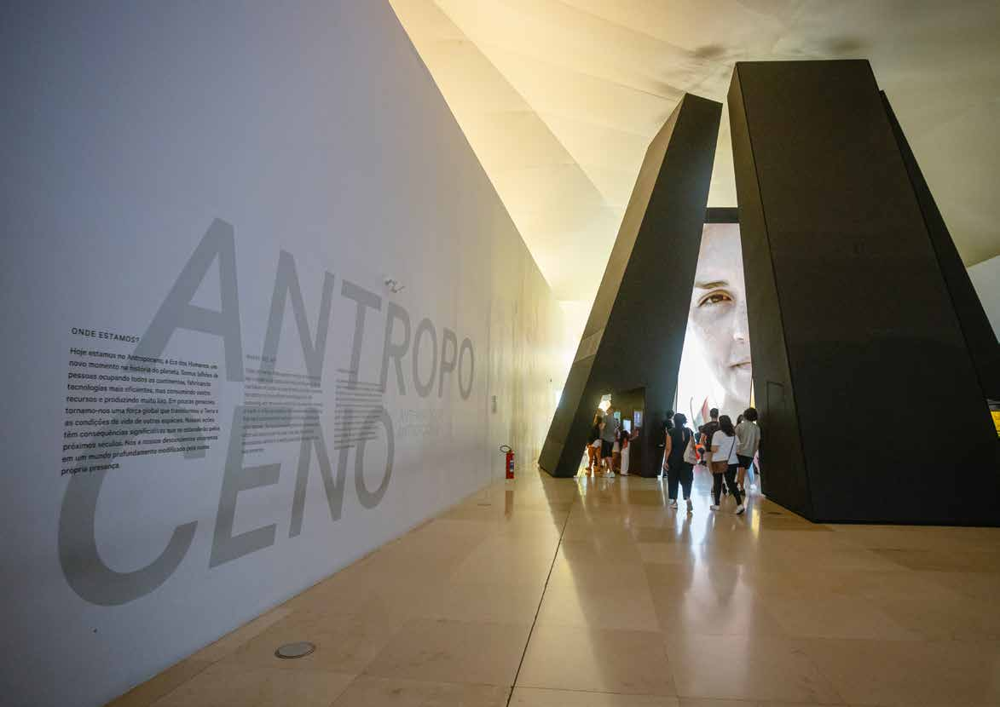
Guia de
Escutas
ANÁLISE QUALITATIVA ESTRUTURADA
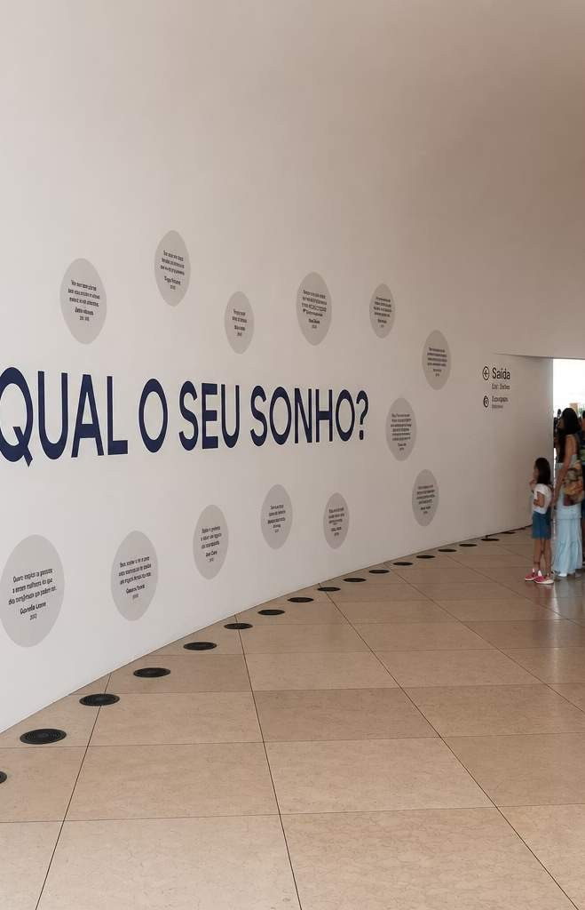
Sobre o guia
Primeiro documento de direcionamento estratégico para orientar ações de escuta na implementação de projetos do idg.
Inspiração
Nasceu inspirado no Guia de Sustentabilidade do idg, apresentado em reunião de diretoria — o instituto repete, para a escuta, o mesmo movimento de transformar uma prática já madura em direcionamento formal.
Processo
Construído de forma colaborativa: diagnóstico das escutas já realizadas nos equipamentos, entrevistas e encontros periódicos entre diferentes áreas do idg ao longo de meses.
Origem
Baseado no diagnóstico da documentação gerada na implementação de diferentes equipamentos: Jardim Botânico, Paço do Frevo, Museu das Favelas, Museu das Amazônias e Museu do Amanhã.
Aplicação
Diretrizes, metodologias e ferramentas para qualificar a escuta e apoiar decisões curatoriais, atualização de exposições e revisão de documentos institucionais.
Para o idg, escuta é um processo estruturado, contínuo e intencional de diálogo, consulta, colaboração e incorporação — voltado a compreender múltiplas perspectivas, experiências e saberes que subsidiem decisões institucionais. Parte do princípio de que diferentes sujeitos são portadores de saberes legítimos, valorizando a troca e a construção compartilhada de conhecimento (Freire, 2017).
O idg atua desde 2001 na implementação e gestão de projetos culturais e educacionais de relevância nacional — hoje à frente do Museu do Amanhã, Paço do Frevo, Museu das Favelas, Museu das Amazônias, Museu do Jardim Botânico e do programa CULTSP PRO. A pesquisa qualificada é um princípio transversal a todos esses projetos, reforçada pela criação da Gerência de Pesquisa de Público, dedicada a produzir informações estratégicas sobre visitantes, comunidades e demais públicos de interesse.
O diagnóstico que originou este guia mostrou que cada realidade demanda escolhas que dialoguem com seus próprios contextos. Por isso, o guia não propõe um modelo único ou uma metodologia fixa de aplicação — oferece princípios, orientações e ferramentas para cada equipe construir sua própria escuta.
A abordagem se afasta do que o pesquisador Dylan Robinson (2020) chama de "escuta faminta" — uma postura extrativista que consome e classifica saberes dentro de categorias prontas, sem reciprocidade ou impacto real. O idg busca o oposto: uma escuta ética, sistemática e territorialmente situada, apoiada em autores como Paulo Freire, Clifford Geertz, Tim Ingold, Donna Haraway, Nina Simon e Mário Chagas.
O que pode variar: procedimento metodológico (entrevista, oficina, consulta…), formato (presencial, digital, híbrido, itinerante), grau de profundidade e linguagem de acesso.
O que não muda: os 5 princípios orientadores e o ciclo de 5 etapas — presentes em toda escuta, qualquer que seja o formato escolhido.
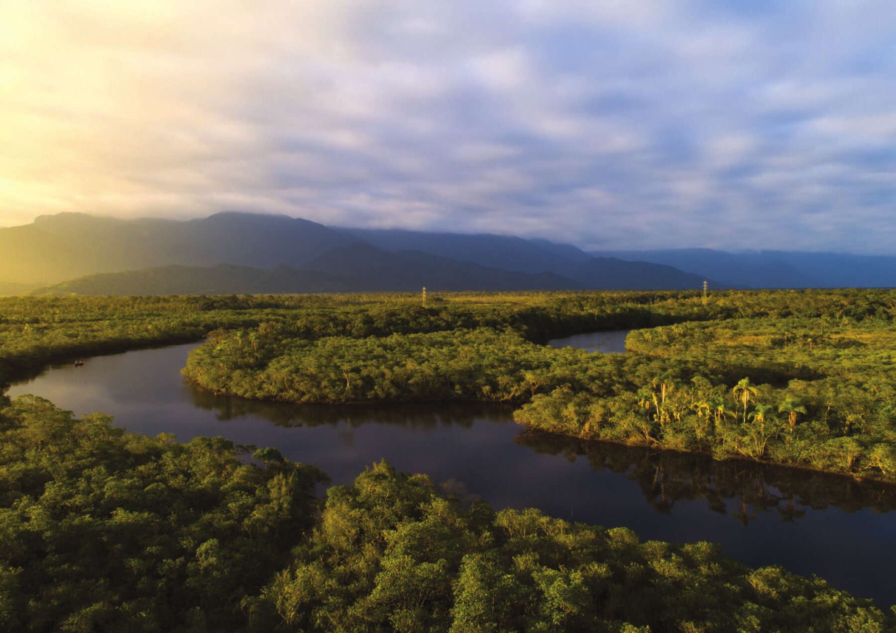
Antes do guia, um museu inteiro nasceu de uma escuta.
Cada princípio deste guia já foi testado em campo: no Plano de Escutas do Museu das Amazônias — o maior processo de escuta já conduzido pelo idg, realizado entre 2025 e 2026 em parceria científica com o Museu Paraense Emílio Goeldi (MPEG).
O material consolidado tornou-se base estratégica direta para o Plano Museológico, as curadorias expositivas, a programação cultural, o educativo e a identidade institucional e visual do museu.
Museu das Amazônias · Plano de Escutas · 2025–2026
Os 3 pilares estratégicos
16 diretrizes organizadas em três eixos — cada uma com ações concretas e indicadores de acompanhamento.
Na prática: os pilares do MAZ. Antes de qualquer entrevista, o Plano de Escutas do Museu das Amazônias definiu seus próprios 5 pilares e 10 premissas — a mesma lógica de estruturação que este guia agora formaliza para todo o idg.
- Amplitude geográfica e representatividade territorial
- Amplitude de público e representatividade sociocultural
- Respeitabilidade e rede de parcerias institucionais
- Atuação com temáticas de interesse e afins ao MAZ
- Disponibilidade para participar e interesse em colaborar com o processo
Cada pilar se desdobrou em premissas com definição e justificativa próprias — por exemplo, priorizar entidades com presença marcante de povos tradicionais e urbanidades periféricas, ou com engajamento em tecnologias ancestrais e inovadoras da Amazônia.
Princípios orientadores
Valem para qualquer formato de escuta — do mais informal ao mais estruturado.
Diversidade e representatividade
Participação de diferentes públicos e formas de conhecimento.
Assegurar a participação de diferentes públicos, considerando a diversidade de perfis sociais, culturais, territoriais e institucionais, assim como as diversas formas de produção do conhecimento. A inclusão de múltiplas vozes contribui para diagnósticos mais abrangentes e ações mais equitativas.
Territorialidade e contexto
Reconhecer especificidades dos territórios.
Reconhecer as especificidades dos territórios, atuando com sensibilidade em relação às particularidades e dinâmicas socioculturais locais de cada equipamento e comunidade envolvida.
Transparência e devolutiva
Clareza sobre resultados e encaminhamentos.
Conduzir as ações com transparência e clareza, assegurando retorno aos participantes sobre os resultados obtidos — contemplando tanto as contribuições incorporadas quanto aquelas que, por diferentes razões, não puderam ser implementadas.
Ética e cuidado
Respeito à privacidade, consentimento e uso responsável.
Respeitar princípios éticos relacionados à privacidade, ao consentimento e ao uso responsável das informações, conduzindo os processos com sensibilidade em contextos sociais, culturais ou territoriais complexos.
Integração institucional
Escuta como prática transversal a todas as áreas.
Compreender a escuta como prática transversal, articulada com as diferentes áreas e equipes — contribuindo para uma visão institucional mais abrangente e coerente, e para o fortalecimento das ações desenvolvidas.
"Antes de tudo, são um estado de respeito à alteridade, materializadas em diálogo, consulta e colaboração."
O ciclo das escutas em 5 etapas
Fluxo aplicável a qualquer procedimento ou formato — o que muda é como cada etapa é conduzida.
Preparar
Definir objetivos, públicos e metodologias antes de iniciar a escuta.
- Objetivo e finalidade da participação claros
- Públicos identificados, com diversidade garantida
- Metodologia adequada aos objetivos
- Equipe, orçamento e cronograma definidos
- Acessibilidade considerada
- TCLE assinado e LGPD observada
Escutar
Executar a coleta com abertura, cuidado e atenção às contribuições.
- Forma de registro e armazenamento definida
- Canais de dúvida disponíveis aos participantes
Sistematizar
Organizar, analisar e interpretar os dados coletados.
- Estratégia de análise e sistematização definida
- Responsável pela sistematização designado
Incorporar
Integrar os aprendizados às decisões e práticas institucionais.
- Claro como e quando os resultados serão usados
- Critérios para incorporar (ou não) contribuições
Devolver
Comunicar aos participantes como suas contribuições foram usadas.
- Retorno aos participantes planejado
- Acompanhamento dos impactos gerados previsto
Na prática: o ciclo do MAZ, em 6 meses. O Plano de Escutas do Museu das Amazônias percorreu exatamente esse fluxo, em escala.
| Etapa | O que foi feito no MAZ |
|---|---|
| Preparar | Fase 1 — definição de 5 pilares e 10 premissas que orientaram todos os critérios de escolha de entidades e agentes |
| Escutar | Fase 2 — Escutas Ampliadas (questionário + entrevistas com 91 entidades) e Escutas Temáticas (5 mesas de debate presenciais e remotas) |
| Sistematizar | Consolidação de mais de 100 horas de gravação em um relatório de mais de 160 páginas |
| Incorporar | Base estratégica direta para o Plano Museológico, curadorias expositivas, programação e educativo |
| Devolver | Relatório consolidado e disponibilizado; processo segue em continuidade, com ampliação permanente das vozes ouvidas |
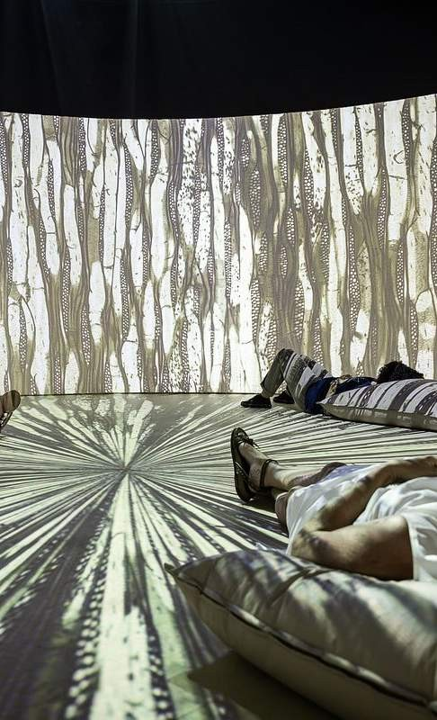
Escutas em contextos sensíveis
A escuta deve passar por avaliação ética prévia e por salvaguardas claras de proteção — especialmente com comunidades tradicionais, povos indígenas e públicos em situação de vulnerabilidade.
Atuação vulnerável
Sensibilidade ampliada com públicos em fragilidade ou risco social.
LGPD
Proteção rigorosa de dados pessoais em todas as etapas do processo.
TCLE
Consentimento livre, informado e esclarecido para todos os participantes.
Apropriação cultural
Rejeição ativa da apropriação exploratória de narrativas e saberes.
Em contextos que envolvem comunidades tradicionais, povos indígenas ou conhecimentos cuja circulação exige cuidado redobrado, a escuta deve passar por uma etapa prévia de avaliação ética e metodológica. Isso inclui considerar as formas legítimas de representação dos grupos envolvidos, protocolos comunitários já estabelecidos e a eventual necessidade de tradução ou mediação linguística.
É fundamental respeitar o direito de recusa, silêncio ou não participação, assim como os limites relacionados ao registro, à gravação e à divulgação das informações compartilhadas — reconhecendo as formas próprias de cada comunidade de produzir e compartilhar conhecimento.
TCLE, sistematização e anonimização não são exclusividade de um projeto — é um padrão que se repete, com o mesmo rigor, em diferentes equipamentos do idg:
No MAZ — Termo de Consentimento Livre e Esclarecido alinhado às diretrizes da CONEP e à LGPD, assinado pelas 91 entidades ouvidas. As falas no relatório final identificam apenas a entidade representada, nunca a pessoa.
No MUP (Museu do Petróleo e Novas Energias) — TCLE assinado pelos 25 especialistas entrevistados, autorizando o uso dos dados. Todo o áudio foi transcrito e codificado, e as falas reproduzidas no relatório estão anonimizadas.
Muda a escala do projeto, mas não muda o cuidado — exatamente o que este guia agora formaliza como padrão para qualquer escuta do idg.
Procedimentos e formatos disponíveis
A escolha depende do objetivo, do público e do contexto de cada projeto.
Pesquisas quantitativas
Questionários estruturados — dados numéricos e tendências.
Quando usar: conhecer perfis, satisfação ou hábitos de visitação.
Vantagens: alcança grande número de participantes; permite comparação.
Limitações: menor aprofundamento qualitativo.
Consultas públicas
Engajamento amplo de públicos em decisões estratégicas.
Quando usar: planejamento, políticas ou decisões de ampla participação.
Vantagens: amplia alcance e legitimidade dos processos.
Limitações: grande volume de informação a sistematizar.
No MAZ: as Escutas Ampliadas, que consultaram 91 entidades em 8 países sobre o que não pode faltar no futuro museu.
Entrevistas
Diálogos individuais aprofundados para ouvir especialistas ou lideranças.
Quando usar: aprofundar temas específicos ou ouvir experiências relevantes.
Vantagens: permite explorar informações detalhadas.
Limitações: exige mais tempo; alcança menos participantes.
No MUP (Museu do Petróleo e Novas Energias): seleção qualitativa de stakeholders — 25 entrevistas semiestruturadas com lideranças da tríplice hélice (academia, indústria e governo), incluindo executivos da Petrobras, PRIO, CNOOC e IBP e pesquisadores do setor energético, conduzidas ao longo de 5 meses.
Oficinas
Criação e coprodução participativa com públicos e comunidades.
Quando usar: cocriação, planejamento, construção coletiva de propostas.
Vantagens: fortalece pertencimento e participação ativa.
Limitações: exige mais tempo de preparação e facilitação.
Grupos focais
Discussão coletiva orientada, com 4 a 10 participantes.
Quando usar: compreender percepções coletivas, testar ideias.
Vantagens: revela consensos e divergências construídos socialmente.
Limitações: exige mediação qualificada; risco de influência entre participantes.
Rodas de conversa
Diálogo horizontal, acolhedor e não hierarquizado.
Quando usar: aproximação com comunidades, escutas territoriais.
Vantagens: favorece confiança e diversidade de perspectivas.
Limitações: menor aprofundamento em temas específicos.
No MAZ: as 5 mesas das Escutas Temáticas, em Belém e online, reunindo lideranças, cientistas e artistas amazônidas em torno de temas como tecnologias da floresta e racismo ambiental.
Escutas de fluxo contínuo — interações espontâneas do cotidiano institucional, sem roteiro prévio. Revelam percepções e demandas que dificilmente emergem em situações formais — mas dependem da equipe para reconhecer, registrar e sistematizar o que foi ouvido.
Cada roda de conversa temática foi registrada ao vivo por um facilitador gráfico, transformando os debates em ilustrações que hoje fazem parte do acervo do museu — um exemplo de como o registro de uma escuta pode, ele mesmo, virar conteúdo expositivo.
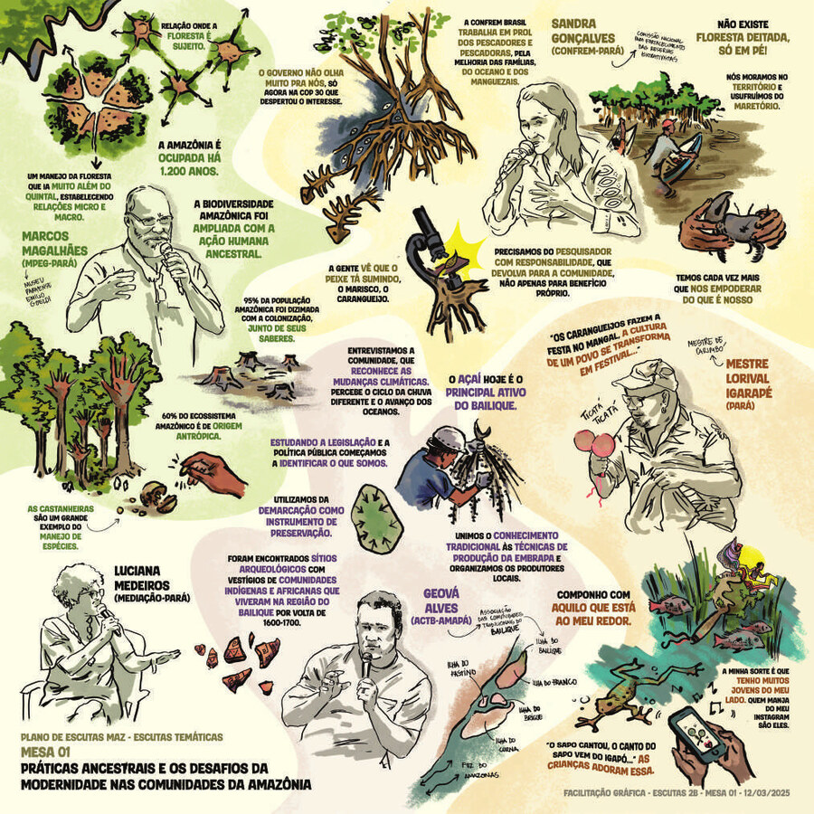
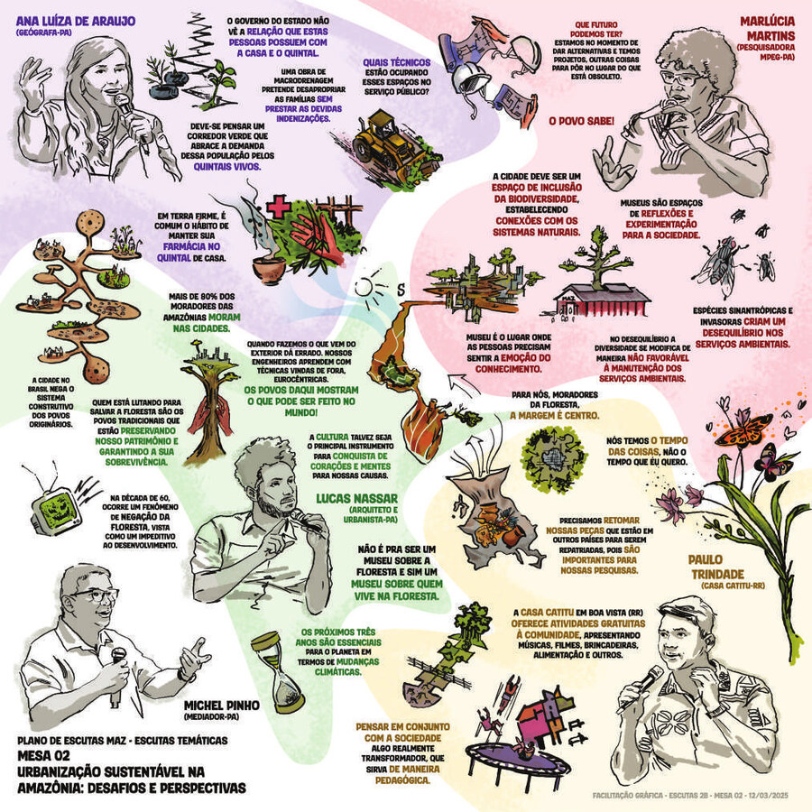
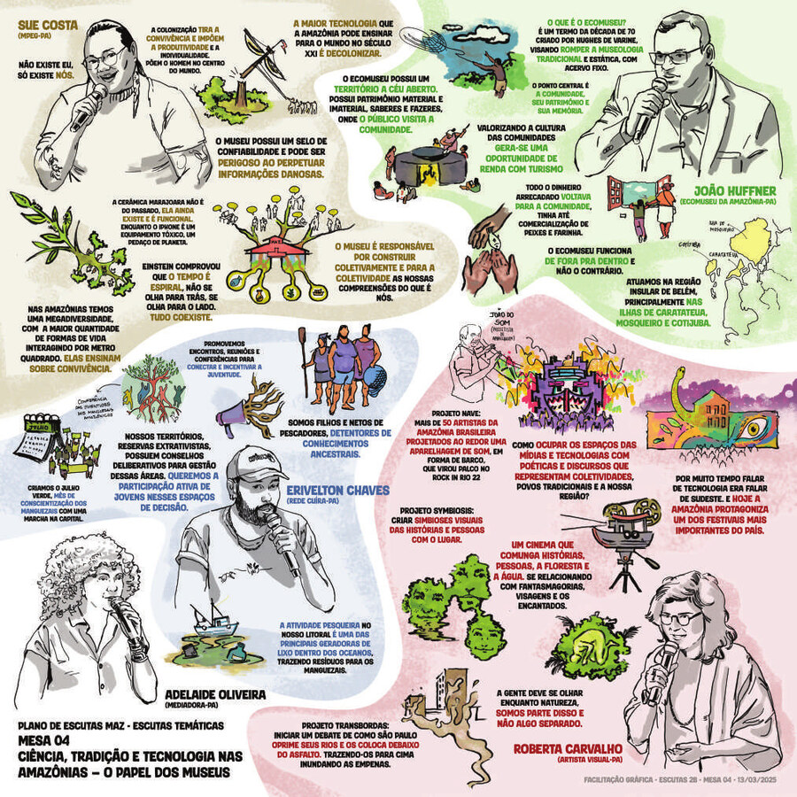
Presencial
Encontros diretos, relação face a face.
Digital
Plataformas online, alcance ampliado.
Híbrido
Combinação de presencial e digital.
Itinerante
Vai aos territórios e comunidades.
Online — grande volume de dados, de forma rápida e assíncrona.
Presencial — debates complexos, mediação de conflitos, públicos sem acesso à tecnologia.
Híbrido — máxima inclusão: profundidade presencial + alcance digital.
Itinerante — públicos dispersos, no cotidiano (ruas, praças, transportes).
Governança e integração
A escuta como prática transversal requer alinhamento entre diferentes áreas institucionais. Na prática, isso significa formar um GT: para que uma escuta dê certo, a equipe do projeto precisa se organizar como um grupo de trabalho transversal — do planejamento à devolutiva.
Produção
Alinha a programação institucional com os aprendizados gerados pela escuta.
Viabiliza a execução do projeto dentro dos limites da realidade institucional — organização logística e gestão de recursos, adaptando o desenho metodológico ao tempo e ao orçamento disponíveis. Sem produção estruturada, a escuta corre o risco de perder qualidade técnica ou falhar em prazos críticos.
Compliance e Jurídico
Segurança legal e ética em todos os processos e etapas do ciclo.
O Compliance garante que as premissas de transparência e governança social sejam respeitadas, evitando conflitos de interesse. O Jurídico estrutura os Termos de Consentimento (TCLE) e de Uso de Imagem e Voz em conformidade com a LGPD e demais legislações vigentes.
TI
Sustenta a infraestrutura para coleta, armazenamento e análise de dados.
Implementa e mantém as plataformas de coleta, garantindo estabilidade técnica, acessibilidade das ferramentas e blindagem contra vulnerabilidades — com controles de acesso rígidos e rotinas de armazenamento seguro, em conformidade com a LGPD.
Museologia
Integra a escuta às narrativas, à curadoria e à experiência museal.
Integra as escutas como dispositivos metodológicos para a qualificação e salvaguarda da memória processual institucional — assegurando que memórias orais e subjetividades coletadas possam subsidiar, quando pactuado com os participantes, processos de musealização e constituição de acervos.
GT de Escutas — o elo entre as áreas
O grupo de trabalho transversal coordena, qualifica e garante a coerência das práticas de escuta em toda a instituição — não é uma nova estrutura burocrática, é a forma recomendada de organizar cada projeto para que Produção, Compliance, TI e Museologia trabalhem com o mesmo direcionamento.
Cabe ao GT acompanhar periodicamente os indicadores estabelecidos, monitorar a aplicação das ações propostas e identificar necessidades de atualização sempre que necessário — considerando tanto aspectos quantitativos quanto qualitativos.
Assim como as escutas, este guia é um documento dinâmico: deve passar por revisão periódica para sistematizar resultados obtidos e incorporar novos aprendizados, metodologias e demandas.
Impactos
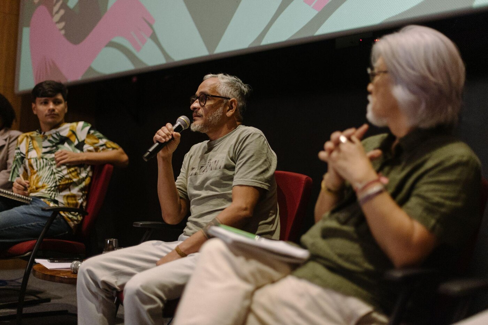
Gestão contínua
A escuta como bússola para decisões institucionais enraizadas no território.
Mediação cultural
Ponte entre instituição, públicos e territórios.
Transformação real
Mudança efetiva nas práticas, programações e relacionamentos.
Legitimidade institucional
Reconhecer saberes diversos gera credibilidade junto a públicos e parceiros.
O Museu das Amazônias é a prova: uma escuta bem feita não fica no papel — ela vira Plano Museológico, vira curadoria, vira museu. É esse resultado que este guia agora torna possível replicar em cada equipamento do idg.
A escuta não parou quando o museu abriu.
Depois da fase qualitativa do Plano de Escutas, o MAZ já aberto ao público segue sendo avaliado — agora de forma quantitativa, com a Pesquisa de Experiência e Satisfação (2.368 respostas).
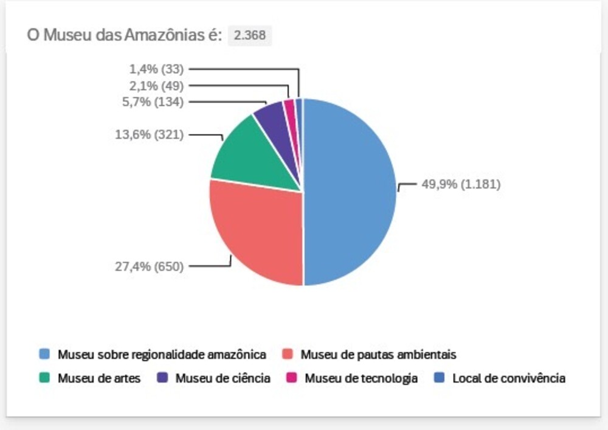
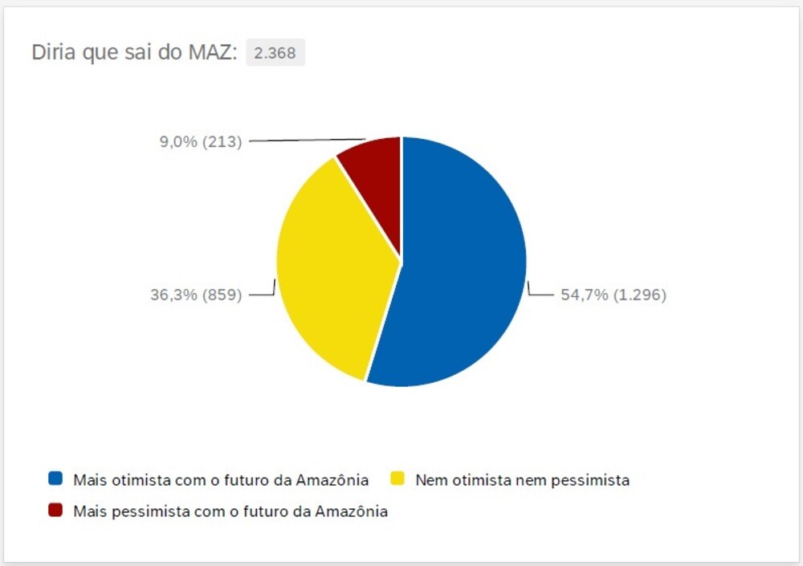
Entre os 2.368 respondentes, 80% não se identificam com nenhum povo ou comunidade tradicional listada na pesquisa — 5% se reconhecem como caboclos, 5% como povos indígenas e 3% como ribeirinhos.
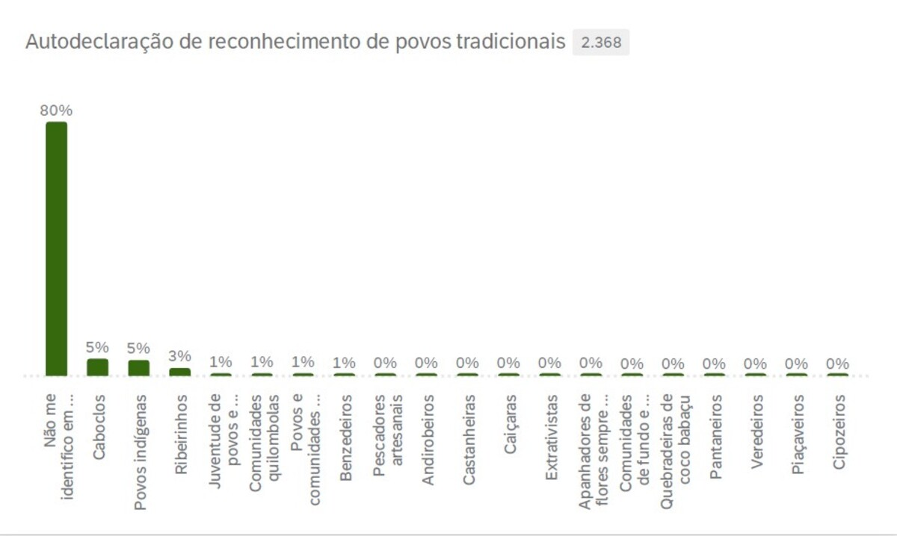
Coordenação do guia
Barbara Lito de Almeida
Diretoria idg
Ricardo Piquet · Carolina Tendler · Cristiano Vasconcelos · Daniel Bruch · Daniela Alfonsi · Luciana Félix · Marlis Silva · Natália Cunha · Raquel Verdenacci · Sergio Mendes
Grupo de trabalho do guia
Daniela Alfonsi, Grazielle Giacomo, Caroline Caldas, Joana Galetti, Julia Paes Leme Nogueira, Leandro Moraes, Luiz Vinicius Maciel, Tamires Pinheiro, Meriene Mazzei, Sandro Henrique Rosa, Adriane Pinheiro
Referenciais teóricos